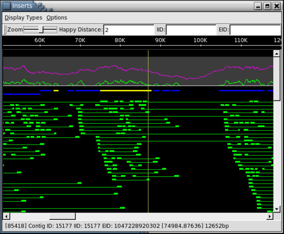
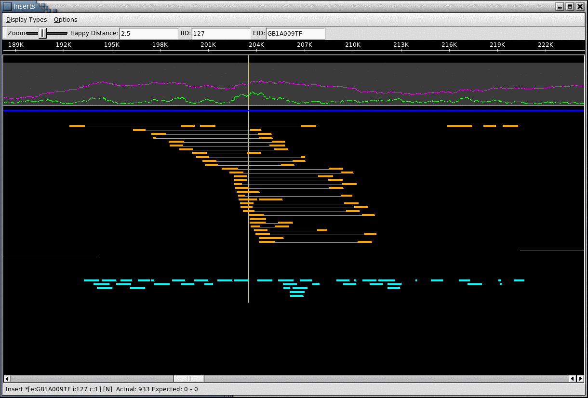

|
Hawkeye
|

|
Hawkeye is a visual analytics tool for genome assembly analysis and
validation, designed to aid in identifying and correcting assembly errors. Hawkeye blends
the best practices from information and scientific visualization to facilitate inspection of
large-scale assembly data while minimizing the time needed to detect mis-assemblies and
make accurate judgments of assembly quality. All levels of the assembly data hierarchy
are made accessible to users, along with summary statistics and common assembly
metrics. A rank-by-feature framework is provided to guide investigation towards likely
mis-assemblies or interesting features to support the task at hand. Wherever possible,
high-level overviews, dynamic filtering, and automated clustering are leveraged to focus
attention and highlight anomalies in the data. Hawkeyes effectiveness has been proven
on several genome projects, where it has been used both to improve quality and to
validate the correctness of complex genomes. Hawkeye is compatible with most widely
used assemblers, including Phrap, ARACHNE, Celera Assembler, AMOS, and
assemblies deposited in the NCBI Assembly Archive.
Click for a presentation on AMOS Assembly Validation and Visualization.
Click for a recorded demonstration of using Hawkeye to analyze a mis-assembly.
Table of Contents
Build & Installation
Hawkeye comes in source form with the AMOS distribution.
You should build the entire AMOS distribution even if you only
want to run Hawkeye so all of the necessary convertors and libraries
are available. You can download the AMOS source package from:
http://sourceforge.net/project/showfiles.php?group_id=134326.
Hawkeye requires Qt 3.x is installed to run. The latest version
is currently 3.3.6 and can be downloaded from the Trolltech website for Unix and Mac OS X:
http://www.trolltech.com/products/qt/downloads.
Many linux distributions come with the Qt runtime libraries
by default, but do not have the development package installed.
You must install both the runtime libraries and the development
package (header files) to build Hawkeye. Cygwin (Windows) is also supported
following the directions in the INSTALL file in the AMOS
source. Qt 4.x is not supported at this time.
The general build process is to run './configure; make; make install'
in the AMOS source directory. You may need to explicitly specify the Qt
directories to configure when building AMOS with the following options:
$ configure --help
<snip>
--with-Qt-dir=DIR DIR is equal to QTDIR if you have followed the
installation instructions of Trolltech. Header files
are in DIR/include, binary utilities are in DIR/bin
and the library is in DIR/lib. Use the options below
to override these defaults
--with-Qt-include-dir=DIR
--with-Qt-bin-dir=DIR
--with-Qt-lib-dir=DIR
--with-Qt-lib=LIB Use -lLIB to link the Qt library
More information is available in the INSTALL file within the AMOS tarball.
Launching Hawkeye
Hawkeye reads the assembly data from an AMOS bank. A bank is a special
directory of binary encoded files containing all information on an assembly.
A bank is created by the AMOS assemblers directly, or by converting
the results of others assemblers into AMOS format. This is done with the tools
toAmos
and bank-transact. toAmos reads the assembly files and converts
them to plaintext AMOS message formats, and bank-transact reads those messages
and creates the binary encoded bank directory.
For example:
$ toAmos -f human.frg -a human.asm -o - | bank-transact -m - -o human.bnk -c
Creates the bank human.bnk from the files human.frg and human.asm, which are the input and output files
for the Celera Assembler.
$ toAmos -ace human.ace -o - | bank-transact -m - -o human.bnk -c
Creates the bank human.bnk from an ace file, which is an output format
for many assemblers including Phrap, Arachne, and Newbler. Check
your assembler's documentation for more information on creating ACE files.
More information on converting to AMOS is available in the toAmos documentation.
Once the bank has been built, launch the viewer by running hawkeye on the bank directory.
This will open your assembly to the Hawkeye Launchpad
where you can see an overview of your assembly and select scaffolds or contigs
for closer investigation:
$ hawkeye human.bnk
Command Line Options
The options available are listed by specifying -h.
$ hawkeye -h
Usage: hawkeye [options] [bankname [contigid [position]]]
Options:
-c <path> Add a chromatogram path
-D <DB> Set the chromatogram DB
-T Enable Trace Fetch cmd
-p <port> Initialize Server on this port
-K <kmer> Load File of kmers
-h Display this help
A typical execution will be "hawkeye prefix.bnk" which will load the
assembly from the bank named prefix.bnk. Specifiying a path with -c
allows you to set a location for the viewer to find the chromatograms
for the project. You may set multiple paths, and hawkeye will search
each one. Similiarily, the -d option also specifies locations for the
chromatograms, but this is for "TIGR style" naming schemes to be used
in conjunction with the -D option. More work is under development to
simplify chromatogram access. The -p option allows you to set a TCP port
for Hawkeye to accept commands from, especially for integration with
mummerplot.
Note that to view chromatograms within the viewer you need to both have
the chromatograms available at a location specified by -c, and have the
chromatogram positions available in the bank or in the trace files.
The chromatogram positions are the positions of the peaks in the traces where
the base call were made. They can be loaded into
the bank with "updateBankPositions bankname posfile" where bankname is
the name of the bank and posfile is a file encoding the positions for
each read.
If your reads are in the trace archive, and you set the EID of the reads to be
ti numbers, then you can fetch the traces and chromatogram positions on the fly
from the trace archive by enabling the Trace Fetch Command (-T). With this enabled,
Hawkeye will execute the following system command to load a trace:
$ curl "http://www.ncbi.nlm.nih.gov/Traces/previous/trace.fcgi?cmd=java&j=scf&val=%EID%&ti=%EID%" -s -o %TRACECACHE%/%EID%
More information on the Trace Fetch Command is comming soon.
Sample Assembly
A sample assembly is available here: gb6.small.afg.bz2 (4.6MB)
The assembly is a small selection from Bacillus Anthracis
consisting of 4 small scaffolds of 11 contigs created from 6249 reads.
It is in a compressed AMOS message file. Download it, and then view
it as follows:
$ bunzip2 gb6.small.afg.bz2
$ bank-transact -m gb6.small.afg -b gb6.small.bnk -c
$ hawkeye -T gb6.small.bnk
Specifying -T enables the trace fetch command so that traces can be viewed
on-the-fly from the NCBI trace archive. See Command Line Options
for more information. See the Launch Pad documentation
for a description of how to navigate this assembly.
Launch Pad
The Launch Pad is the first window displayed in Hawkeye and acts as an overview and portal to your assembly.

(Click for full size versions)
Scaffold View
The scaffold view of the assembly shows how the contigs and
inserts are placed on the scaffold. It uses the library sizes to
categories the "happiness" of each insert, meaning it displays if the
paired reads are correctly oriented and at the expected distance apart.
The threshold distance
for a "happy" insert can be adjusted by setting the maximum allowed
number of standard deviations from the mean an insert can be. Details
on all objects displayed
in the Insert view can be found by clicking on any object. The mate for
any
unhappy read is highlighted be right clicking on the read.

It also plots both the read and insert coverage at each position along
the scaffold, highlighting positions of low coverage or low linking
coverage. The viewer can also be used to highlight arbitrary features
along the scaffold. This functionality is currently used to highlight
regions of the genome where the assembly has a high occurence of
unhappy insert coverage, or regions of high density correlated SNPs.
Both such events are strong evidence for misassembly.

Contig View
The contig window of the viewer displays the mulitple
alignment of reads within contigs, and lets one view the bases of the
reads
and the consensus sequence. The chromatogram signal, and quality values
of the reads can optionally be displayed, as can the trimmed
unassembled portion of the read. One can quickly and easily navigate to
any position in any contig, or scan contigs for regions of disagreement
between the reads. Alternatively, the consensus sequence of a contig
can be searched by regular expression.

Menubar
The File menu has options for opening a bank, setting chromatogram
paths, and displaying summary windows.
The Options menu toggles various settings:
- Color Bases - Toggle if
the bases should be colored red, blue, yellow and green or just black
and white
- SNP Coloring - Toggles if
clicking in the consensus should color the reads based on the base at
that position
- Show Full Range - Toggles
if the trimmed bases should be displayed or not. They are displayed
with a red tint.
- Show Positions - Toggles
if the consensus position should be written at each position or just at
every 10 bp.
- Show Indicator - Toggles
if the carret indicator should be displayed above the consensus position
- Show Quality Values -
Toggles if the base quality values should be displayed in the tiling
- Low Case Low QV - Toggle
if bases with low quality (< 30) should be displayed in lower case
letters
- Highlight Discrepancies -
Toggles if bases which disagree with the consensus should be
highlighted in purple
- Prefetch Chromatograms -
Toggles if chromatograms should be displayed without clicking in the
tiling.
Toolbars
The position box displays the current position (the leftmost displayed
consensus position), and also accepts input for jumping to arbitrary
positions. The up and down arrows next to the spin box step the view
window in 1 base increments. The left and right arrows next to the
position spin box jump to the previous and next position with a
discrepancy in the reads relative to the current position indicated
by the caret above the consensus position line.
The A+ and A- increases and decreases the font size. The Find
box allows for Qt regular expressions to be input, and the left and
right arrows will search the consensus sequence for that regular
expression, and highlight it in the consensus.
Tiling
Immediately below the toolbars is the consensus of the contig. A solid
circle above the consensus flags the
position as having a discrepancy in the tiling. Clicking in the
consensus will color and sort the reads based on the base at that
position. In the screenshot above, I clicked on the C at position
11386. The first 2 reads (GDEI048TF and GDEIN20TF) are colored green
because they have an A at that position, whereas the other reads have a
C and are therefore colored blue. This allows one to easily see that
the reads disagree with the other reads in a consensistent way.
Single-clicking on a read displays the chromatogram signal for the
read. The chromatogram displayed in the main window will be stretched
so that the peak occurs aligned with the base calls. Double-clicking on
a read will open a new window with the raw chromatogram (see below).
Below the tiling is some summary information, including the filename of
the bank, how many contigs are contained in the bank,
the current contig id, the length of the consensus of the current
contig and the number of reads in the current contig.
Chromatogram Window
Double clicking on a read in the tiling displays the read in a separate
chromatogram window if the chromotogram is available and the bank
positions have been loaded. Below we see the chromatogram display for
read DMGLJ45TR. Unlike in the tiling window, the chromatogram displayed
has not been stretched, instead the base calls are respaced to align
with the peaks. The top number is the consensus position. The next line
is the consensus and the current read's base calls are beneath. A solid
circle above the consensus flags there is a discrepancy in the tiling
at that position (as at position 776/802). Below the read's base calls
are the quality values of the base calls. Below the quality values is
the current sequence position (1-based gapped). Below this the
chromatogram signal is displayed, and the chromatogram position is
displayed at the bottom. The window is tinted so that trimmed bases
appear with a dark background- the C at 785/811 is the last base in the
clear range of this read.

Contact Information
Report bugs or suggestions to <amos-help@lists.sourceforge.net>